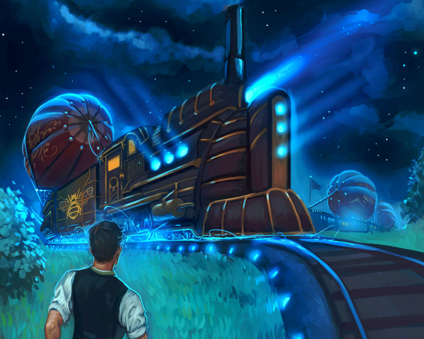
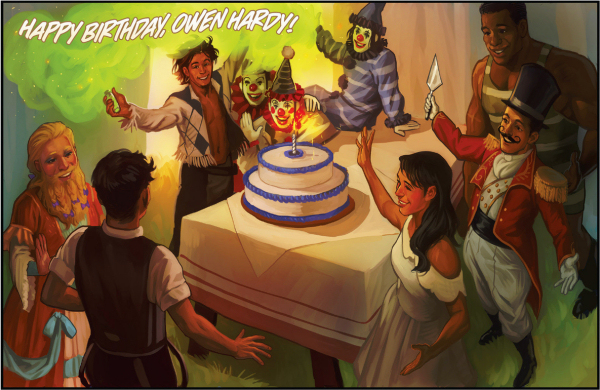

Clockwork Angels is the 19th studio album by Canadian progressive rock band Rush and also a title of the science fiction novel, inspired by the album, written by author Kevin J. Anderson, a long time friend of Neil Peart, the drummer and lyricist of the band.
Kevin J. Anderson said about the album’s [and novel’s] concept: “In a young man’s quest to follow his dreams, he is caught between the grandiose forces of order and chaos. He travels across a lavish, colourful world of steampunk and alchemy, with lost cities, pirates, anarchists, exotic carnivals, and a rigid Watchmaker who imposes precision on every aspect of daily life.”
Rigid Watchmaker imposes precision on every aspect of life
Following generally favourable reviews of the concept album and the accompanying world concert tour, as well as the success of the novel based on it, Anderson and Peart approached Boom! Studios with the proposal of a comic book adaptation. Boom! Studios liked the idea and the six-issue miniseries Clockwork Angels was published between March and November 2014.
The story of Clockwork Angels centres on Owen Hardy, a young man who, like all the other people of Albion, has lived his whole life under the rule of the Watchmaker sitting in his high clock tower in the Crown City, from where he commands the loyalty of his subjects, and makes his announcements, through the beautiful, yet eerie, Clockwork Angels. In this highly ordered world, the whole Owen’s life, and those of all other ordinary citizens, have been planned down almost to the exact second. This perfect order is preyed upon by the elusive Anarchist, who is determined to destroy all the Watchmaker’s meticulous plans.
Owen is the Assistant Apple Orchard Manager in small town of Barrel Arbor who is soon to marry a local girl, Lavinia, not because he loves her, but because that’s the Watchmaker’s plan. Owen, a daydreamer, asks his soon-to-be-bride to join him on the orchard hill at midnight, to have a kiss in the moonlight and watch the late-night steamliner heading toward Crown City.
To his big disappointment, Lavinia doesn’t show up, so Owen walks down the hill to see the passing steamliner on his own. As the liner passes by, a stowaway pops out from one of the carriages and offers him his hand. Owen hesitates for a fraction of a second, but then, realising that this could be his only chance to see the Crown City, accepts the outstretched hand and gets pulled aboard by the mysterious stranger. After a short ride on the steamliner, Owen eventually realises his dream and gets to see Crown City and the wondrous Clockwork Angels in the Chronos Square. He finds his true love in Francesca, the tightrope walker at the local carnival. Owen’s happiness is short-lived though, when he is mistaken for the Anarchist and chased out of the city by an angry mob. He barely escapes with his life and finds refuge on board a steamship heading for Atlantis.
Owen then embarks on a truly epic, soul-searching journey which takes him to many exotic locations, forgotten lands and lost cities, such as the fabled Atlantis with its Poseidon City, and entangles him in both the Watchmaker’s plans and Anarchist’s scheming, all that while riding aboard magnificent steamships and airship-based steamliners across vast oceans and fighting heinous Wreckers – pirates who lure unwary ships onto rocks by making false lights on dangerous reefs. Owen’s search for the truth slowly leads him to the realisation that this Utopia, this seemingly perfect world he was living in, isn’t as ideal as it seems, and that true happiness may lie in simple things, such as reciprocated love.

Ostentatiously designed in a way that was intended to please fans of Rush (wooed by the promise of Rush lyrics and other Easter eggs hidden throughout the comic) and devotees of Steampunk genre alike, the graphic novel, penned by a veteran science fiction writer Kevin J. Anderson (Prelude to Dune trilogy) is surprisingly good for a comic book inspired by a studio album, owing not so much to its, rather mediocre, narrative, as to its refreshingly original watercolour-like illustrations by a relative newcomer to the genre Nick Robles.